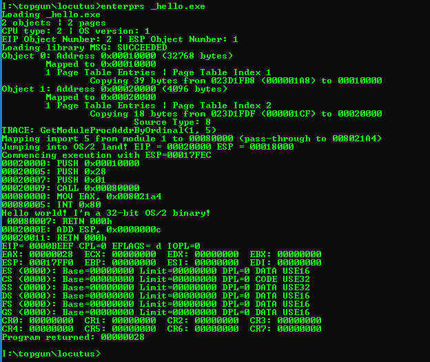
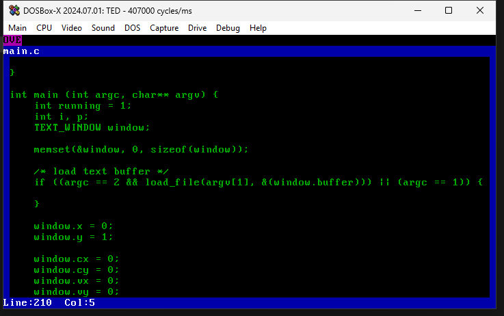

I am Will Klees, also commonly known under my screen-name captainwillstarblazer, and welcome to my home page. I'm primarily interested in developing software for retro platforms, including old-school PCs and occasionally game consoles such as the Nintendo GBA. In conjunction with this, I'm fascinated by the history of personal computers, particularly in the 80s and 90s, so I often do lots of reverse-engineering projects and other assorted historical endeavours.
I have been featured multiple times as a guest writer for Neozeed's VirtuallyFun blog, and am also an avid reader of Michal Necasek's OS/2 Museum blog, and Raymond Chen's The Old New Thing.
If you're interested in hiring my services, whether as a consultant or employee, you're invited to take a look at my resume. My skills range far and wide, but the services I'm most likely to be able to provide include
To contact me, please email me at william (dot) p (dot) klees (at) gmail (dot) com. I'd be very interested to hear what everyone has to say.
News
Updates on work that I'm doing here!
Battlestar Galactica Video Game
A simple on-rails 3D space shooter based on the Battlestar Galactica (1978) television series, done in the style of old vector arcade games such as Atari's Star Wars (1983). Written entirely in JavaScript/HTML using the Canvas by myself and Andrew Wagger in January 2023.
Starblazer
Take a trip you'll never forget into the space age of the 21st century with Starblazer, a series of 3D space combat simulation games I've been developing, primarily for MS-DOS computers. I have an old Starblazer website too, but it's pretty out of date.
EmuWOW
An emulator I wrote as a senior in high school to enable applications compiled for Windows NT running on the MIPS and Alpha AXP (and even i386) processor architectures to run on other processors. Originally intended to enable the elusive AXP64-targeting compiler (rediscovered, alongside an early AXP64 build of Windows, in May 2023, when EmuWOW was originally conceived) that only ran on Alpha (alongside other MS dev tools, such as for MIPS and PowerPC, that run only on the target platform) to run on more readily-available x86 machines. Essentially, it's the inverse of the WX86 emulator that Microsoft published for the RISC versions of Windows. This project was featured on VirtuallyFun twice in January and February of 2024, but development unfortunately stalled a little bit. A rewrite was embarked on that even enabled a version of EmuWOW compiled as a native 64-bit executable. Currently, Alpha AXP support is minimal, but several of the in-built Windows NT 3.51 applets for MIPS and i386 work, along with some simple test programs.
EmuWOW worked by implementing a custom PE loader. All of the EXE/DLL files required by the requested program are loaded into EmuWOW's address space (and inserted into the PEB's loader list; EmuWOW maintains a PEB for the emulated process), and a CPU emulator executes the instructions one-by-one. Similar to Microsoft's WOW and WOW64 emulation layers, most of the DLLs are identical to what would be used in a "real" environment for the desired CPU (i.e. if you're running the MIPS version of Solitaire, you're using the real Windows NT versions of CARDS.DLL and SHELL32.DLL), but the low-level DLLs exposing the Win32 API (i.e. the ones that perform system call thunks, generally) are special. In my case, they use an illegal instruction to trap into EmuWOW's thunk handler.
I intend to continue work on EmuWOW (potentially even using it for dynamic malware analysis where traditional debuggers fail?), but several blockers exist on its progress:
Locutus
Another emulator in a similar vein to EmuWOW that I worked on as a high-school senior, inspired by the 2ine project. Unlike 2ine, however, it is designed not only to emulate the OS/2 API (like Wine does for Windows) but also emulate the 80386 CPU. This not only enables portability to other processor architectures, but also better emulates OS/2's selector management (selector management APIs available to user programs in OSes like Windows and Linux only get you so far) - a subject 2ine struggled with. 2ine also had problems running on operating systems other than Linux due to some OS/2 EXEs being linked to load only at address 10000H with no relocations, despite that address not being available on all OSes (or even always on Linux), which is solved by running the OS/2 process in an emulated address space. Currently, only trivial programs run, which is due both to imperfect OS/2 API emulation and imperfect CPU emulation. The CPU emulation components are due to be shared with EmuWOW.
I'm not intimately familiar with the OS/2 API, but all in all, it seems relatively simple and not too difficult to translate to Windows. DOSCALLS is fairly simple I/O stuff that maps fairly close on any remotely UNIX-adjacent system, the Presentation Manager windowing/event system maps almost 1:1 with USER, and while GPI and GDI have a somewhat different imaging model, I don't imagine it will be too difficult to do either.

Unauthorized Windows/386
I did some reverse-engineering work on Windows/386 version 2.xx that even ended up with me writing another VirtuallyFun blog post which went onto blow up on HackerNews along with a few other aggregators. I haven't yet swung back into this project, but getting the 386 debugger to work is a top priority. Exploring Windows 3.0 1.14 could also be very interesting.
Undocumented VWIN32
This is the preliminary title for a research project I'm planning to do. The exact focus isn't yet clear to me, but VWIN32 sits at the intersection of the two topic areas that I'm considering:
The History of DPMI
While this subject has been discussed at some length online, I wanted to compile some of my own impressions on the early history of DPMI, as informed by a phone conversation I had with Ralph Lipe, the inventor of DPMI and one of the chief architects on Windows/386 2.x and its successors.
VIDEO
Some code I quickly wrote up to handle decoding of Microsoft Video 1-encoded AVI files. PLAYER.C contains a simple Win32 AVI player, though it has some serious bugs. Notably, it doesn't use any of the Microsoft APIs for decoding MSV1 (i.e. calling MSVFW32 to invoke the MSV1 driver) or walking the RIFF tree. MSV1.ASM contains an x86 (16-bit) assembly-optimized decoder for MSV1 videos. In combination with a DOS bitmap viewer, it should be possible to write a fast AVI player for 8086 machines with VGA graphics.
TED
A simple DOS text editor that I'm writing. Once combined with the TUI windowing system I'm developing, it'll be awesome!

C4 DOS Extender
To enable me to use Microsoft tools to develop more of my own MS-DOS software (including my games), I have started developing my own environment which provides a PE dynamic loader and flat memory model on top of DPMI.
Early prototypes (very messy) were done with a PE loader bootstrapped from Watcom with the Causeway extender, but work has transitioned to a new base (a sample program of my own making!), which includes 32-bit code in assembly and C, all created using Microsoft tools, all united within an MZ executable.
One of the sub-projects within C4 (so named to contrast with Phar Lap TNT; the internal name "DOSXPLOD" used in many places is a similar play on words) is a 32-bit debugger. Right now, I'm planning to keep it simple (i.e. like a machine language monitor - no symbols, no expression parsing, nothing fancy) before stuffing it with features (including even a TUI interface). Not only will this debugger be useful for other 386 projects (including my emulator), large parts of the debugging engine can simply be lifted to help debug emulators for other processors (i.e. MIPS) for the next version of Windows.